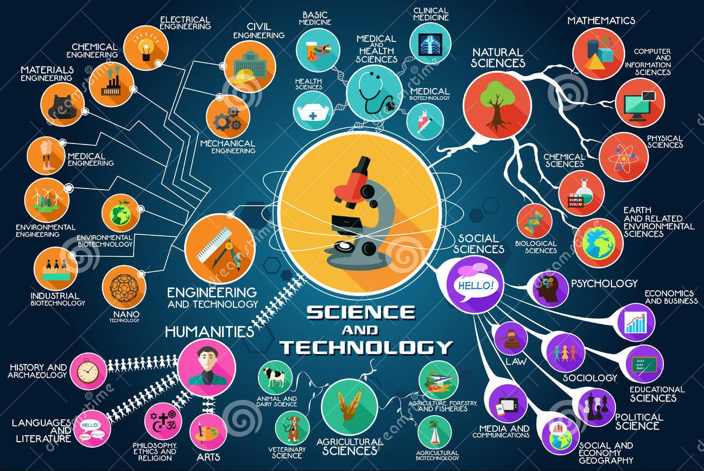

Where the world learns infinite possibilities
| Science Technology Engineering Maths Where the world learns infinite possibilities |
| About Us | Contact Us | Gallery | Facts | Users |
|---|
| What is Science and Technology ? |
|
Science is a systematic way of acquiring knowledge about a particular field of study. According to Science Made Simple, a leading website in scientific eduction, science helps us to gain knowledge, through an organized system of observation and experimentation. This system is used to describe different natural phenomena. The aforementioned description is that of pure science, and biology, chemistry, physics and Earth science are the basic fields of pure science. Technology can be defined as the products, tools and processes used to accomplish tasks in daily life. According to Use of Technology, technology is the application of science to solve a problem. Technology involves the application of engineering and applied sciences to solve the practical problems of human lives. Technology is basically human knowledge that is used to create products and artifacts with the help of innovative tools, systems and materials. Technology is used for communication, manufacturing, learning, securing data and transportation; it is often a consequence of science and engineering, but technology as a human activity precedes the other two fields. |
|  |
| Allrigth reserved and Copyrigt@2016 by Ashish |
|